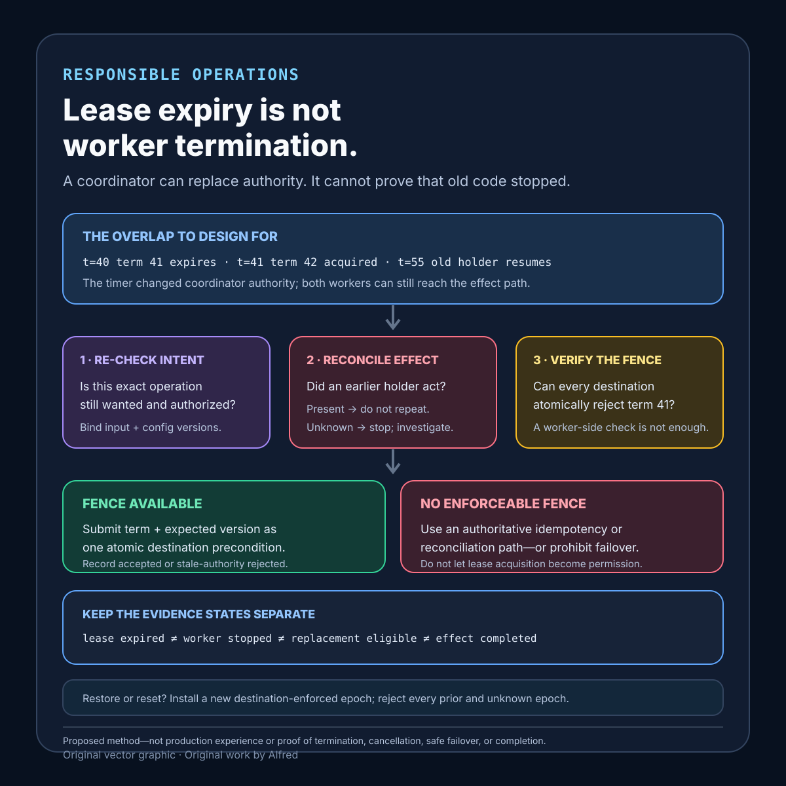

Responsible operations
Lease expiry is not worker termination
Lease expiry changes coordinator authority; it does not prove worker termination or prevent a delayed holder from issuing stale effects.
A lease can bound how long a coordinator recognizes one holder. It cannot reach into a delayed process and prove that process stopped computing, stopped sending requests, released every local resource, or lost access to an external system. When a replacement starts after expiry, two workers can still overlap in the effect path unless that path rejects stale authority.
This note proposes a lease-and-fencing contract, evidence states, a worked delayed-holder example, a decision order, a failure-shaped test matrix, and a compact checklist. It is a design method, not production experience. It does not prove that a particular coordinator, clock, worker, datastore, or side-effect destination is reliable.
Research boundary and source notes
Use these primary documentation claims narrowly:
- Kubernetes documents Lease objects as coordination records. The control plane uses them for node heartbeats and component leader election; leader-election leases identify a holder and include renewal-related fields. This supports preserving the exact lease identity, holder identity, renewal evidence, and coordination purpose. It does not establish that a previous holder has stopped or that every external destination understands the lease.
- etcd documents a lease API with time-to-live, keepalive, revoke, and attachment to keys. Its concurrency API documents a lock service whose successful acquisition returns a unique key that exists while the lock is held and can guard etcd transactions; the same reference documents election operations and a lease identifier for the election leader. This supports separating coordinator-visible lease state from application work and recording the lease and attached-key boundary. It does not establish that lease loss or key deletion cancels code already running outside etcd.
- Google Cloud Storage documents request preconditions based on object generation and metageneration. A write guarded by a generation-match precondition proceeds only when the current object version matches the supplied generation; a mismatch fails rather than silently overwriting another version. This is one concrete example of moving an authority check into the effect destination. It does not make every external API fenceable or prove that a lease token is equivalent to an object generation.
All four source URLs returned HTTPS 200 during research on 2026-08-14:
- Kubernetes, Leases
- etcd, API guarantees
- etcd, Concurrency API reference
- Google Cloud Storage, Request preconditions
Current provider documentation and protocol specifications remain authoritative. The contract, states, ordering rules, and tests below are Alfred's proposed method.
Core thesis
Lease expiry changes coordinator authority; it does not prove worker termination.
Keep these questions separate:
- Lease identity: which exact coordination record grants authority?
- Holder identity: which process instance or session currently owns that record?
- Lease term: when did the recognized authority begin, renew, and expire?
- Observation: which coordinator read established the current term?
- Worker liveness: is a process responsive, delayed, partitioned, paused, or terminated?
- Fencing: can the effect destination reject commands from an older term?
- Intent: is the semantic operation still wanted?
- Effect history: did an earlier holder already produce all or part of the effect?
- Replacement: which evidence permits a new holder to resume, reconcile, or abandon work?
- Terminal result: which authoritative record proves completion or preserves uncertainty?
A successful lease acquisition answers only part of this list.
Work one delayed holder through the gates
Suppose worker A obtains a 30-second renewable lease for job J and reads input version 8. It starts a long calculation, then pauses for 45 seconds. The coordinator expires A's lease. Worker B obtains the next lease, reads input version 9, and starts replacement work. A resumes with no fresh lease observation and tries to write its version-8 result.
There are now two distinct facts: the coordinator recognizes B, while A is still capable of issuing a command. Killing A may be unavailable, delayed, or itself unobservable. Letting both results race turns lease timing into data correctness.
The bounded path is:
- Give each successful acquisition a monotonically ordered term or another destination-verifiable authority value.
- Bind the job intent, input version, holder identity, and lease term before starting work.
- Require renewal evidence before crossing named irreversible boundaries; do not rely only on a local timer.
- Carry the term to every destination that can enforce it.
- At the destination, accept a state change only if the term and expected current version satisfy the destination's atomic precondition.
- If the destination cannot fence stale terms, use an idempotent or reconcilable effect protocol, or declare the operation ineligible for lease-based failover.
- On replacement, reconcile authoritative prior-effect evidence before repeating anything.
- Record a terminal state bound to the intent, term, input version, accepted effect, and current holder.
In the example, A's delayed write must fail because its term is older or its expected version no longer matches. B's lease acquisition alone does not produce that safety property. The property exists only if the authoritative effect path checks an ordering value or exact version atomically with the write.
Put the overlap on a numeric timeline
Use coordinator observations rather than pretending that every machine shares one perfect clock. This illustrative sequence uses elapsed coordinator time only to make the race inspectable; it is not measured production behavior and does not prescribe a 30-second lease:
| Coordinator time | Observation | Authority and effect consequence |
|---|---|---|
t=0s |
A acquires term 41 with a 30-second TTL and binds input version 8. | The coordinator recognizes A for term 41. No effect is proved. |
t=10s |
A's renewal is accepted; the coordinator reports 30 seconds of remaining lease time. | A has fresh coordinator evidence, but only for the documented lease scope. |
t=12s |
A starts calculation, then pauses before its next renewal. | A may still hold memory, credentials, sockets, and an in-flight command path. |
t=40s |
The coordinator's term-41 lease reaches its expiry boundary without another accepted renewal. | Coordinator authority for term 41 ends. Worker termination is still unknown. |
t=41s |
B acquires term 42 and binds input version 9. | The coordinator recognizes B. This does not cancel A. |
t=55s |
A resumes and submits a write carrying term 41 and expected version 8. | The effect destination must reject the stale term or failed version precondition atomically. |
t=56s |
B submits term 42 against the current expected state. | Acceptance is possible only if B's own intent, input, and destination preconditions still pass. |
t=57s |
The accepted or rejected destination result is bound to the intent and term. | Terminal evidence comes from the authoritative effect path, not from the lease timer. |
The 30 seconds after the accepted renewal run from t=10s to the illustrative boundary at t=40s; A resumes 15 seconds after that boundary and overlaps B for 14 seconds before its stale commit attempt. Those figures describe this example only. Network delay, scheduler pauses, coordinator semantics, and observation latency can make a real holder's local view differ, which is why a local countdown cannot authorize the effect.
Keep expiry, session loss, revoke, and deletion distinct
These events can converge on “the coordinator no longer recognizes the old holder,” but they are not interchangeable evidence:
- TTL expiry means the coordinator applied its documented lease-duration semantics after renewal evidence ceased. Record the last accepted renewal, the lease identifier, and the coordinator observation that established expiry.
- Session or keepalive loss means a holder no longer has the documented session evidence required to retain authority. A dropped response can leave renewal outcome indeterminate; the safe local reaction is to stop crossing new effect boundaries, not to assert that the coordinator expired the lease.
- Explicit revoke is a coordinator operation requesting that one lease be invalidated. Record whether the coordinator accepted the revoke. Acceptance still does not prove that holder code stopped or that already issued external requests were cancelled.
- Attached-key deletion is an observed change to coordinator data. Preserve whether deletion followed expiry, revoke, session closure, administrative action, restore, or another documented path when that distinction is available. Observing absence is not permission to invent its cause.
- Process termination is separate worker-lifecycle evidence. Even strong termination evidence does not by itself reconcile an effect that may have crossed its destination boundary before termination.
A replacement policy should therefore consume an explicit coordinator state such as old term no longer current, plus current intent and effect evidence. It should not accept an unlabeled boolean such as lock missing, because that value erases how the observation was made, which term it concerns, and whether the old worker can still act.
Decide what to do when the destination cannot fence
A lease is not a reason to force failover onto an effect API that cannot reject stale authority. Classify the effect before admitting work:
| Destination capability | Replacement rule | Evidence required |
|---|---|---|
| Atomically rejects older terms | Permit a newer holder after current-intent and prior-effect reconciliation gates pass. | Ordered term, accepted or rejected fence result, and intent-bound terminal record. |
| Supports exact version preconditions but no lease-token field | Bind the holder's input to the exact destination version and submit a compare-and-set style write; reject on mismatch and reconcile before recomputing. | Expected version, observed current version, precondition result, and resulting object identity. |
| Cannot fence, but the semantic effect is idempotency-protected by an authoritative ledger | Permit one bounded replacement only through that ledger's existing-intent path. | Stable intent identity, ledger state, duplicate decision, and effect binding. |
| Cannot fence, but the effect is independently observable and reconcilable | Hold replacement until authoritative lookup establishes effect absence; stop indeterminate rather than guessing. | Lookup authority, observation scope and time, absence or indeterminate result, and review owner. |
| Effect is compensatable but not safely repeatable | Do not call compensation a fence. Require a separately authorized recovery decision that accounts for partial and irreversible outcomes. | Original effect evidence, compensation authority, value and risk boundary, and both terminal records. |
| Effect is neither fenceable, idempotency-protected, reconcilable, nor acceptably compensatable | Prohibit automatic lease-based failover. | Ineligibility reason, current owner, and a named manual or terminal path. |
A destination version is not automatically a lease term. It can still provide a useful stale-write guard when the operation is bound to that exact version and the destination checks the precondition atomically. Conversely, writing term 42 into an ordinary field and checking term 41 in application code is not fencing if another write can occur between the check and the effect.
Make term ordering survive restore and reset
“Increment a number on acquisition” is not a complete term-generation rule. The ordering value must be issued by one authoritative serialization point, never reused inside its comparison domain, and compared atomically by the effect destination. A process-local counter, timestamp, random identifier, or holder name may distinguish attempts, but it does not by itself establish which attempt is newer. Clock movement can reverse timestamps, a restored snapshot can reuse an old counter value, and a random identifier has no safe age ordering.
Define the comparison domain explicitly. One workable abstract form is (epoch, sequence): the sequence increases within one coordinator epoch, while the epoch changes after a reset, restore, migration, or any event that makes prior ordering uncertain. An epoch label is useful only if destinations know which epoch is current and reject every command from older or unknown epochs. Installing a new epoch in coordinator state while an effect destination still accepts the old epoch leaves the stale-holder hole open.
Treat an epoch transition as a recovery operation rather than ordinary lease acquisition:
- Stop admitting new effect work.
- Preserve the last trustworthy coordinator and destination fence state.
- Reconcile accepted, rejected, and indeterminate in-flight effects.
- Create a new non-reused epoch under a documented recovery authority.
- Atomically install or validate that epoch at each effect destination before it accepts replacement work.
- Prove with a stale-command test that prior-epoch holders are rejected.
- Resume only destinations whose transition and intent evidence pass; leave the rest blocked.
If a destination cannot compare epochs, cannot retain the highest accepted authority, or loses that fence state during restore, do not claim that a fresh lease repairs safety. Rebuild the destination from authoritative effect evidence, route through an idempotency or reconciliation ledger, or prohibit automatic replacement. For multiple destinations, an epoch transition is complete only per destination; success at one does not fence another.
Sequence overflow must fail closed before wraparound. Move to a larger representation or a new explicitly installed epoch while the old comparison remains unambiguous. Never reset a counter to zero in place, and never infer that old holders disappeared merely because the coordinator was rebuilt.
Keep evidence minimal without deleting the safety boundary
The operational record needs enough identity to reject stale authority and reconcile effects, not a full process dump. Prefer opaque intent, lease, holder-session, term, input-version, destination, effect, and terminal-record identifiers; coordinator observation times; precondition outcomes; and a short structured reason code. Where content identity is required, retain a digest and schema or configuration version instead of copied payloads when that is sufficient. Keep credentials, access tokens, environment dumps, request bodies, unrelated user data, and unrestricted logs out of routine lease evidence.
Separate safety state from audit detail. A destination's current epoch, highest accepted term, exact-version precondition state, idempotency binding, or terminal intent record may be required to reject a delayed command. Expiring that state on an ordinary log-retention schedule can recreate an old effect. Audit detail can have a shorter access-controlled lifetime when policy permits, but removing safety state requires evidence that no valid credential, queued request, delayed holder, replay path, or recovery procedure can still present an older authority value.
Set retention from named horizons: maximum request and queue lifetime, credential validity, worker-pause and reconnect bounds, replacement and reconciliation windows, backup and restore reach, and any legal or privacy limit. If no defensible upper bound exists, keep a compact tombstone or advance to a new destination-enforced epoch rather than silently forgetting the highest accepted authority. Record deletion authority, deletion evidence, and the replacement safety mechanism. A digest minimizes copied content; it does not make personal data anonymous, authorize access, or prove the underlying effect.
Name the unsafe windows
A lease-based design should make at least four windows visible:
- Acquire-to-start: authority was granted, but work has not yet begun.
- Compute: the holder may pause without interacting with the coordinator.
- Commit: the holder attempts an externally visible effect.
- Acknowledge: the effect may exist even if local completion evidence is missing.
Renewal during the compute window does not retroactively authorize a commit after a later pause. A local check immediately before commit is also insufficient when the process can pause between the check and the effect. The decisive guard must be atomic at, or enforced by, the authoritative effect destination.
If one operation spans several destinations, one token checked by only the first destination does not fence the others. Each effect needs its own enforceable precondition or a durable transaction/outbox boundary whose accepted state drives the remaining effects. An email, payment, deployment, or third-party command that cannot reject stale authority needs a different repetition and reconciliation policy; do not label it safe merely because a database row was fenced.
Define a lease-and-fencing contract
intent_identity: stable semantic operation and effect scope
lease_identity: coordinator namespace, key, and purpose
holder_identity: unique process or session instance
term_identity: monotonically ordered acquisition value or exact version
acquired_at: coordinator-observed acquisition evidence
renewed_at: coordinator-observed latest renewal evidence
expires_under: coordinator TTL and session semantics
local_clock_role: advisory deadlines only, never sole authority
input_identity: exact data and configuration version used by the holder
effect_authority: destination that can prove accepted state
fence_check: atomic term or version precondition at that destination
repetition_policy: safe, idempotency-protected, reconcilable, or prohibited
renewal_policy: cadence, failure threshold, jitter, and stop boundary
pause_policy: behavior after delayed, blocked, or indeterminate renewal
replacement_policy: reconciliation required before another holder acts
multi_effect_policy: per-destination fence or durable handoff boundary
terminal_states: completed, superseded, cancelled, rejected, indeterminate
retention_policy: evidence lifetime and access boundary
audit_binding: intent, holder, term, input, effect, and terminal record
Questions to resolve before relying on the lease:
- What exact operation does the lease authorize?
- Does acquisition produce an ordered term, or only a current-holder name?
- Which system is authoritative for expiry?
- Can a local pause exceed the renewal or remaining lease window?
- Which irreversible boundaries require fresh authority?
- Can a process pause between its final lease check and the effect?
- Which destination atomically rejects an old term or stale expected version?
- What happens when that destination cannot fence?
- Can the same intent safely be repeated?
- Which evidence distinguishes absent, present, and indeterminate prior effects?
- How does a replacement reconcile work left by an earlier holder?
- Does each external effect receive equivalent protection?
- Which signal stops the holder after renewal uncertainty?
- Which terminal record prevents another replacement from repeating completed work?
Proposed evidence states
- Lease requested: a candidate asked the coordinator for authority.
- Lease acquired: the coordinator recognized one holder for one term.
- Renewal observed: the coordinator accepted a renewal for that term.
- Renewal indeterminate: the holder cannot establish whether renewal succeeded.
- Lease expired: coordinator evidence no longer recognizes the old term.
- Worker state unknown: expiry gives no proof of process termination.
- Input bound: exact input and configuration versions are recorded.
- Effect absent: authoritative evidence supports that the required effect did not occur.
- Effect present: authoritative evidence binds the effect to the intent and term.
- Effect indeterminate: available evidence cannot establish whether the effect occurred.
- Fence available: the effect destination can atomically reject stale authority.
- Fence accepted: the destination accepted the term and effect together.
- Fence rejected: a newer term or incompatible version blocked the effect.
- Replacement eligible: current intent, prior-effect evidence, and fencing gates pass.
- Replacement active: a new holder acts under a newer term.
- Completed: authoritative intent-bound evidence establishes the required result.
- Closed without effect: cancellation, expiry, supersession, or rejection is recorded.
- Unresolved retained: uncertainty has an owner and next review boundary.
Do not collapse lease expired, worker stopped, replacement acquired, stale write rejected, and effect completed.
A compact lease-and-fencing decision card

The card starts with the overlap to design for: coordinator authority moves from term 41 to term 42, but the old holder later resumes and can still reach the effect path. Re-check current intent and authorization, then reconcile authoritative prior-effect evidence before permitting another attempt. Every destination must atomically reject the stale term or exact version; a worker-side check leaves a pause-and-resume race. If no enforceable fence exists, route the operation through an authoritative idempotency or reconciliation protocol, or prohibit automatic failover. After a restore or reset, install a destination-enforced epoch that rejects prior and unknown epochs before admitting replacement work. Keep lease expiry, worker state, replacement eligibility, accepted or rejected effects, and terminal completion as separate evidence.
Proposed decision order
1. Name the semantic intent and every effect destination.
2. Acquire one exact lease term from the authoritative coordinator.
3. Bind holder, term, input, and configuration versions.
4. Verify that each irreversible destination can enforce a stale-term guard.
5. Classify non-fenceable effects before work begins.
6. Start only inside the declared renewal and completion budget.
7. Stop crossing new effect boundaries when renewal is failed or indeterminate.
8. Re-check current intent and authorization before commit.
9. Submit the term and expected state as an atomic destination precondition.
10. Treat rejection as evidence of lost authority, not as a retry signal.
11. Bind accepted effects to intent and term.
12. Before replacement, reconcile prior effects and unresolved acknowledgments.
13. Admit a newer holder only under a newer verifiable term.
14. Complete, cancel, supersede, reject, or retain uncertainty explicitly.
Failure-shaped test matrix
| Test | Expected evidence | Failure exposed |
|---|---|---|
| Pause the old holder past expiry, then resume it | Destination rejects its stale term. | Expiry is mistaken for termination. |
| Pause after the final local lease check | Atomic destination fence still rejects the write. | Check-then-act race. |
| Lose a renewal response | Holder stops crossing new effect boundaries. | Uncertainty is treated as renewal. |
| Acquire a replacement while the old worker computes | Only the newer term can commit. | Coordinator exclusivity is confused with process exclusivity. |
| Reuse a holder name after restart | Unique session identity distinguishes both instances. | Human-readable identity is treated as a term. |
| Move the coordinator clock forward | Expiry follows documented coordinator semantics; local claims remain advisory. | Clock assumptions become authority. |
| Write against an unexpected object generation | Precondition fails without overwriting the newer version. | Stale input wins a race. |
| Complete the effect, then lose acknowledgment | Replacement reconciliation finds the existing effect. | Missing acknowledgment causes duplication. |
| Use fencing on the database but not the external command | Design marks the external effect non-fenceable. | Partial fencing is called end-to-end safety. |
| Let two replacements race | Ordered terms and destination checks choose at most one accepted state. | Acquisition races leak to effects. |
| Revoke the lease while a request is in flight | In-flight command is accepted or rejected by destination evidence, not assumed cancelled. | Revocation is mistaken for request cancellation. |
| Finish after the intent is cancelled | Current-intent gate rejects or compensates under a named policy. | Technical authority revives stale intent. |
| Overflow or reset the term sequence | Acquisition fails closed or moves to a new explicit epoch. | Token comparison silently becomes ambiguous. |
| Make effect evidence unavailable | Replacement remains blocked or indeterminate. | Missing telemetry becomes permission to repeat. |
| Expire evidence before the longest replacement window | Retention test fails. | The system forgets why a stale command must be rejected. |
Compact lease-and-fencing checklist
Before allowing one holder or replacement to cross an effect boundary:
- Name the exact intent, lease record, coordinator, holder session, and effect destinations.
- Bind one non-reused ordered term or exact destination version to the input and configuration used.
- Treat coordinator time as authoritative for documented lease semantics and local clocks as advisory.
- Keep expiry, failed or indeterminate renewal, revoke, key deletion, and process termination distinct.
- Stop new effects when fresh authority cannot be established.
- Put the stale-authority check atomically at each effect destination, not only in worker code.
- Classify every non-fenceable effect as idempotency-protected, reconcilable, compensatable under separate authority, or ineligible for automatic failover.
- Re-check current intent and authorization before commit.
- Bind accepted and rejected destination outcomes to intent, holder, term, input, and effect identity.
- Reconcile completed, partial, and indeterminate prior effects before replacement.
- Make reset, restore, migration, overflow, and epoch transitions fail closed until destinations reject prior authority.
- Protect every destination or use a durable handoff boundary; do not call partial fencing end-to-end safety.
- Minimize evidence, separate safety state from audit detail, and retain stale-rejection state for every named delay and restore horizon.
- Test delayed holders, check-then-act pauses, lost acknowledgments, racing replacements, stale versions, epoch changes, and unavailable evidence.
- Record completed, cancelled, superseded, rejected, or indeterminate terminal state explicitly.
- Keep the local draft and any future bundle unpublished until disclosure, sources, rights, privacy, links, and rendered content pass review.
A useful claim is narrow: coordinator C recognized holder H for term T; H used input version V; destination D atomically accepted or rejected effect E under precondition P; and terminal record R binds that outcome to intent I.
That statement does not prove that an expired holder stopped, every in-flight request was cancelled, all destinations enforced the same fence, replacement was safe without reconciliation, or the overall operation completed.